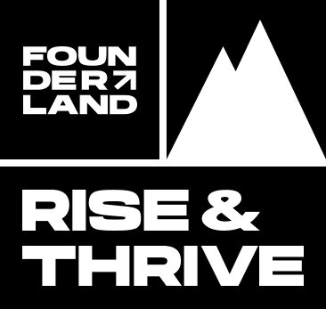

Rise & Thrive Report
Qualitative research report on Women of Color Founders in Berlin
{% include nav.html %}
{% include section-1.html %}
{% include section-2.html %}
{% include section-3.html %}
{% include section-4.html %}
{% include section-5.html %}
{% include section-6.html %}